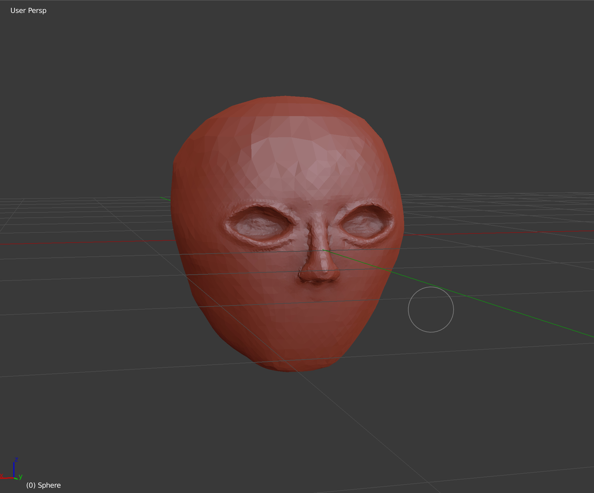
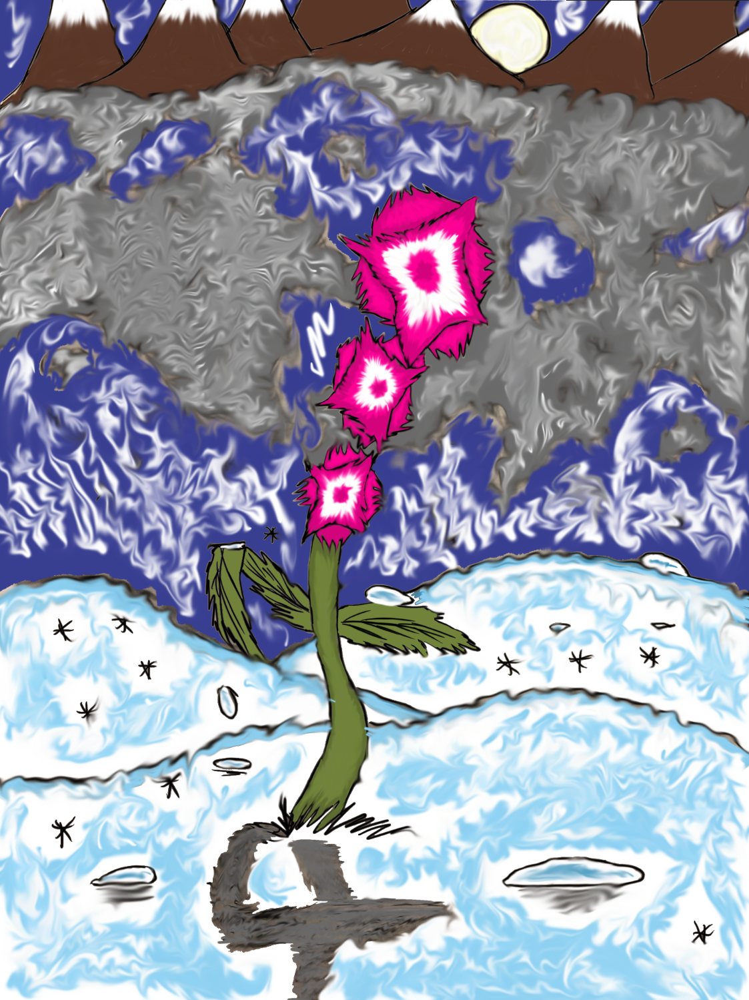

Blender

A 3D project of a lizard enemy. I started following a tutorial and this is what came from it.

Work in progress.
A mug I was making from a tutorial.
Photoshop
_Final.jpg)
A post-apocalyptic version of an outdoor plaza. The project took several days to complete and this was the finished product.

A photo I made on my free time.
Photography

A nearby park.

A park near an outdoor plaza.

A local Ste. Chapelle vineyard.

A local vineyard.